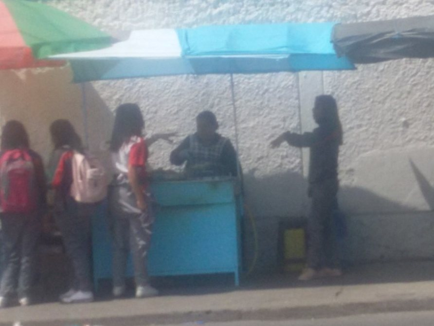
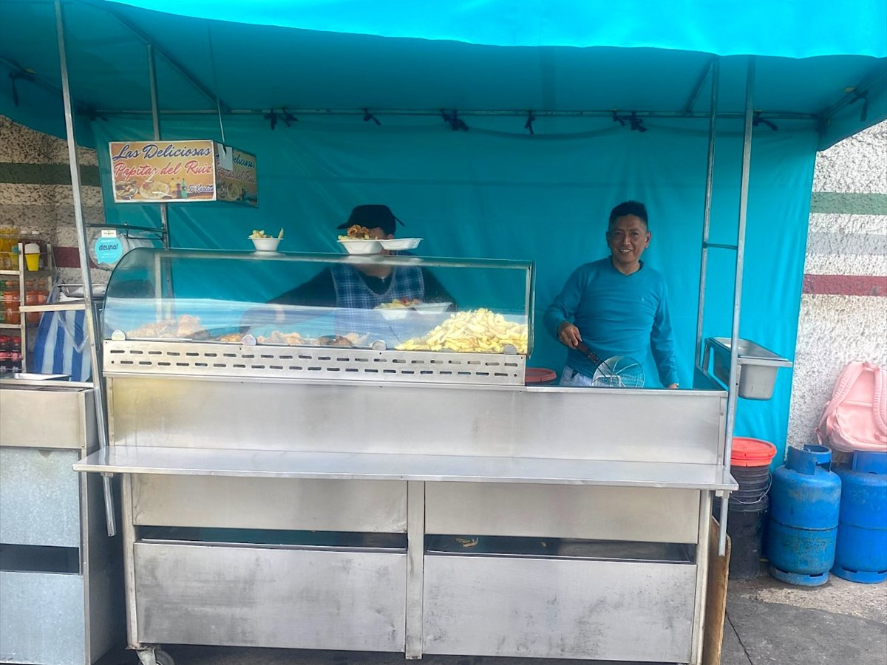
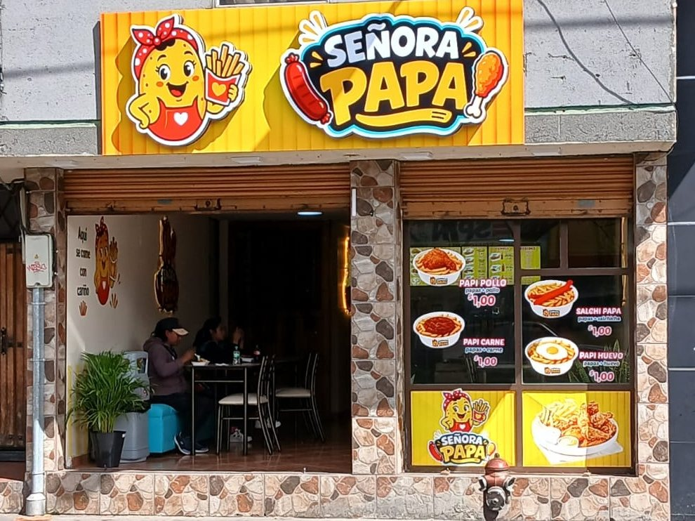

De dónde venimos
Nuestra Historia
Un puesto de papipollos a la salida del colegio, y más de diez años vendiendo en la misma acera. Así llegamos hasta aquí.

2015
Un puesto a la salida del colegio
La señora Karlita empezó vendiendo papipollos frente al colegio Fernando Ruiz, en el sur de Latacunga. El puesto era una carpa y un mostrador, y la fila la hacían los estudiantes al salir de clases.
Ahí se armó todo lo demás: el punto de la papa, el pollo crocante y la costumbre de servir porciones generosas que caracterizan a «Las Deliciosas Papitas del Ruiz».

Con los años
La misma ubicación, el puesto más grande
Nunca nos movimos de ahí. Lo que cambió fue el puesto: hoy es un carro de acero, con vitrina de vidrio y su propio letrero, «Las Deliciosas Papitas del Ruiz».
Sigue abierto, en el mismo sitio de siempre, la misma deliciosa sazón y la mejor atención. Muchos de aquellos estudiantes ya son grandes y todavía se pasan a comprar.
«Empecé con una carpa y muchas ganas. Hoy tengo un local, y sigo atendiendo a cada persona con el mismo cariño.»

2026
Abrimos Señora Papa
Este año dimos el paso más grande: un local propio, con mesas y espacio para sentarse a comer con calma. Está al norte de Latacunga, en la Av. Benjamín Terán y Av. Amazonas, en el ex redondel de la FAE.
La carta creció y llegaron las mixtas, las dobles, las triples y los combos. La receta, esa sigue siendo la misma de 2015.
Lo que no cambia
Qué nos hace diferentes
Tres cosas que hacemos igual desde el primer día.
Preparado al momento
La papa se fría cuando la pides, igual que en el puesto. Nada precocido, nada recalentado del día anterior.
La misma receta de 2015
El adobo del pollo y el punto de la papa son los mismos del primer puesto. Es lo único del negocio que no hemos cambiado nunca.
Negocio de familia
Lo empezó la señora Karlita y lo seguimos atendiendo entre la familia. Aquí no hay número de turno: hay gente que te conoce.
Ven a probar de qué se trata
Estamos al norte de Latacunga. Pásate cualquier día y pide lo que más te llame la atención.